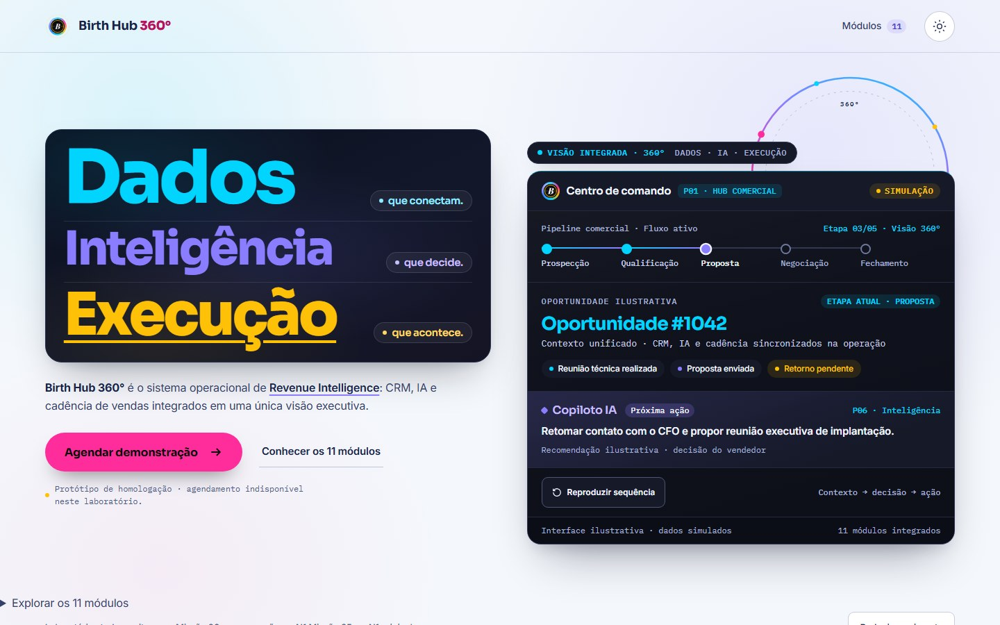

Alternativa escolhida
Estúdio Editorial Cromático
Superfície profunda unificada, iluminação radial nas cores oficiais e alinhamento editorial das tags.
 Birth Hub 360° · Hero Lab
Birth Hub 360° · Hero LabCentral isolada de estudos visuais. Aqui ficam os conceitos originais, os estudos neon, as versões refinadas e o candidato atual — sem alterar a landing oficial nem a plataforma.
Protótipos e interfaces do produto são demonstrações ilustrativas; os CTAs não executam ações reais.Dois estudos comparativos para substituir as placas pretas brutas do Light Mode por uma superfície editorial cromática.

Superfície profunda unificada, iluminação radial nas cores oficiais e alinhamento editorial das tags.

Cápsulas escuras sob cada palavra neon e tags externas sobre o papel claro #F4F7FB.
Três direções de Hero preservadas como evidência de exploração: comando cinematográfico, editorial e inteligência interativa.


B V2 refinou a base editorial; N1, N2 e N3 testaram três gramáticas neon antes da direção final.

Refinamento homologável da linguagem editorial com hierarquia mais precisa.


Identidade gráfica autoral com grid assimétrico, marca 360° integrada e distribuição ousada das quatro cores.
Desktop 1440 px e mobile 390 px, nos temas dark e light, para os conceitos e estudos neon.